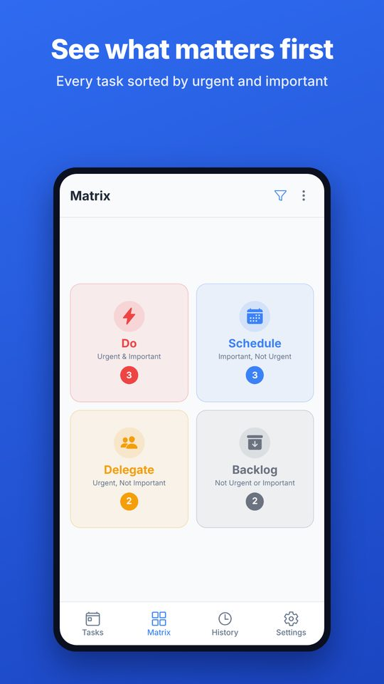

Uporządkuj listę zadań według pilności i ważności
Darmowa macierz Eisenhowera do druku, krótki poradnik i prywatna aplikacja na Androida, która posortuje zadania za ciebie.
Pobierz aplikację z Google Play Pobierz szablon do drukuCzym jest macierz Eisenhowera?
Macierz Eisenhowera pomaga zdecydować, co zrobić najpierw. O każde zadanie pytasz dwa razy: czy jest pilne? Czy jest ważne? Odpowiedzi umieszczają zadanie w jednym z czterech pól.
Nazwa pochodzi od Dwighta D. Eisenhowera, któremu przypisuje się zdanie „To, co ważne, rzadko jest pilne, a to, co pilne, rzadko jest ważne”. Później Stephen Covey spopularyzował cztery pola w książce 7 nawyków skutecznego działania.
Jak z niej korzystać w pięć minut
- Zapisz wszystko. Przelej wszystko z głowy na jedną listę, zanim zaczniesz cokolwiek sortować.
- Najpierw zapytaj: „Czy to ważne?” Ważne znaczy, że przybliża cię do czegoś, na czym ci zależy. Pilność łatwiej poczuć, więc oceniaj ją w drugiej kolejności.
- Potem zapytaj: „Czy to pilne?” Pilne znaczy, że zwłoka będzie naprawdę kosztować.
- Każdemu zadaniu w „Zaplanuj” nadaj datę. To pole kryje to, co najważniejsze, i nigdy nie krzyczy. Bez daty nic się nie wydarzy.
- Raz dziennie zrób przegląd. Przy każdym zaległym zadaniu zdecyduj: zrobione, dziś, innego dnia albo usuń.
Darmowy szablon do druku
Jedna strona, cztery pola i miejsce na notatki. Wydrukuj go albo trzymaj na biurku jako kartkę na dziś.
Pobierz PDF (A4) Format US Letter
Za darmo do użytku osobistego i w szkole. Bez podawania e-maila.
Aplikacja na Androida
Macierz Eisenhowera: Zadania sortuje za ciebie. Oznacz zadanie jako pilne, ważne albo jedno i drugie, a trafi do właściwego pola.



Za darmo
- Macierz z dziennym i miesięcznym widokiem kalendarza
- Widżety na ekranie głównym z dzisiejszymi zadaniami i szybkim dodawaniem
- Powiedz zadanie na głos, a data i godzina uzupełnią się same
- Podzadania, zadania cykliczne, etykiety i przypomnienia
- Przegląd dnia, który przeprowadzi cię przez zaległe zadania jedno po drugim
- Eksport i import danych
Pro, jedna płatność
- Pływający dymek do dodawania zadań z dowolnej innej aplikacji
- Dodawanie wielu zadań: wklej listę i rozdziel ją między pola
- Automatyczne kopie zapasowe w wybranym folderze
Pro możesz testować za darmo przez 7 dni, bez karty i bez rejestracji. Nie ma subskrypcji.
Prywatność od podstaw
Bez konta, bez reklam, bez śledzenia i bez analityki. Twoje zadania zostają na telefonie, chyba że zdecydujesz się zrobić kopię albo je udostępnić. Przeczytaj politykę prywatności (po angielsku).
Pobierz aplikację z Google Play
Z bloga
Artykuły na blogu są po angielsku.
- Aplikacje z macierzą Eisenhowera na Androida: co porównać
- Plan noworoczny, który przetrwa styczeń
- Jak uporać się z listą zaległych zadań
- 50 prawdziwych zadań rozdzielonych na cztery pola
- Pilne czy ważne? Dziesięć zadań, które często mylimy
- Macierz Eisenhowera dla studentów w czasie sesji
Pytania
Czy aplikacja naprawdę jest darmowa?
Tak. Cała metoda, widżety, przypomnienia, zadania cykliczne i eksport są darmowe na zawsze. Pro to jednorazowy, opcjonalny zakup kilku funkcji oszczędzających czas.
Czy potrzebuję konta?
Nie. Nie trzeba się nigdzie rejestrować i nic nie jest wysyłane na serwer.
Czy jest wersja na iPhone'a?
Jeszcze nie. Na razie tylko na Androida.
Czym różni się pilne od ważnego?
Zwłoka z pilnym zadaniem naprawdę kosztuje. Ważne zadanie przybliża cię do czegoś, na czym ci zależy. Wiele zadań jest jednym bez drugiego i właśnie o to chodzi w macierzy.
Co trafia do czwartego pola?
Zadania ani pilne, ani ważne. Niektórzy nazywają to pole „Usuń” albo „Wyeliminuj”. Aplikacja nazywa je „Na później”, bo wiele z nich warto jeszcze raz przejrzeć, zanim się z nich zrezygnuje.
Jak się skontaktować?
Napisz na adres eisenhower.mtrx@gmail.com.